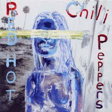

„By the Way” to ósmy w dorobku zespołu Red Hot Chili Peppers album studyjny grupy, nagrywany między listopadem 2001 a majem 2002 roku w Cello Stadios i Chateau Marmont Hotel w Los Angeles. Wydany został 9 lipca 2002 roku za pośrednictwem Warner Bros. Group.
Red Hot Chili Peppers w zupełnie innej odsłonie niż dotychczas, płyta z pewnością odmienna od poprzedniczek. Zrezygnowano na niej z mocniejszego grania na rzecz bardziej melodyjnego, do czego w dużej mierze przyczynił się gitarzysta John Frusciante, który skomponował znaczącą część muzyki, opracował riffy i struktury zarówno basowe jak i akustyczne, zmienił również sposób i harmonogram procesu nagrywania. Na płycie znajdziemy przyjazne dźwięki gitary, refleksyjne teksty i jedne z najbardziej rozpoznawalnych piosenek, takie jak „Can’t Stop”, „By the Way” czy „The Zephyr Song”.
Z albumu „By the Way” wydane zostały single: „By the Way” (wydany w 2002), „The Zephyr Song” (wydany 3 grudnia 2002), „Can’t Stop”(wydany 17 lutego 2003), „Dosed” (wydany w 2003) i „Universally Speaking” (wydany w 2003).
Producentem albumu tradycyjnie został Rick Rubin.
Tracklista:
1.”By the Way” – 3:37
2.”Universally Speaking” – 4:19
3.”This Is the Place” – 4:17
4.”Dosed” – 5:12
5.”Don’t Forget Me” – 4:37
6.”The Zephyr Song” – 3:52
7.”Can’t Stop” – 4:29
8.”I Could Die for You” – 3:13
9.”Midnight” – 4:55
10.”Throw Away Your Television” – 3:44
11.”Cabron” – 3:38
12.”Tear” – 5:17
13.”On Mercury” – 3:28
14.”Minor Thing” – 3:37
15.”Warm Tape” – 4:16
16.”Venice Queen” – 6:07